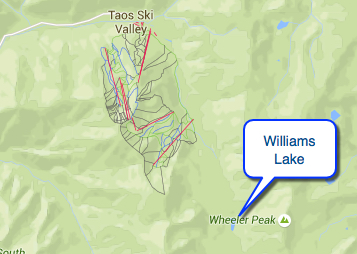
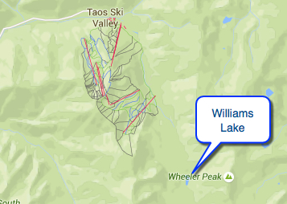

Hike New Mexico
w/ Tom & Ken
Williams Lake Hike


 

- Sep 10, 2006: Starting the hike
- Sep 10, 2006: Visitors along the way
- Sep 10, 2006: Wooded trail view
- Sep 10, 2006: Top of the trail
- Sep 10, 2006: View from Williams Lake
- Sep 10, 2006: Williams Lake\n
- Sep 10, 2006: Springs empty into Williams Lake
- https://www.flickr.com/photos/139088815@N08/27327695581/in/album-72157668795870731
- https://www.flickr.com/photos/139088815@N08/27300756872/in/album-72157668795870731
- https://www.flickr.com/photos/139088815@N08/27327686751/in/album-72157668795870731
- https://www.flickr.com/photos/139088815@N08/27398890825/in/album-72157668795870731
- https://www.flickr.com/photos/139088815@N08/27300765932/in/album-72157668795870731
- https://www.flickr.com/photos/139088815@N08/27123201700/in/album-72157668795870731
- https://www.flickr.com/photos/139088815@N08/26790910434/in/album-72157668795870731
While the Taos area has a great many hikes available, one of the most popular is Williams Lake, accessed from a point near the ski valley. The Taos Trails site has some information on the hike. Although the trail is designated as "Easy" in the hiking reference book Santa Fe-Taos Hiking Guide by Bob D'Antonio, because it starts at almost 10,000 ft and ascends about 1200 ft from there, if not acclimated to that altitude, hiking will proceed with more difficulty. Nonetheless it is a beautiful location and well worth the effort. From the Taos Ski Valley, a dirt road goes up to the trailhead, otherwise, if hiking from the ski valley, significant distance and elevation will be added to the hike.